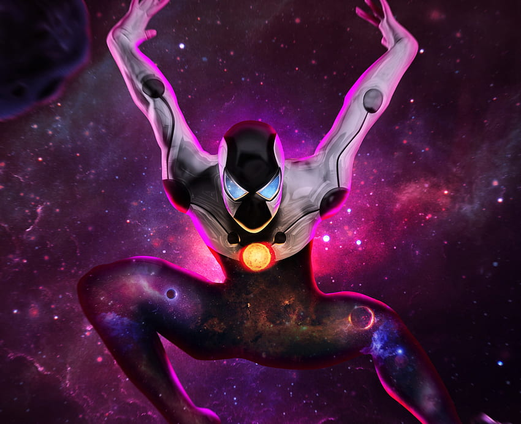

Why is he the goat?
Although Spider-Man is primarily known as a street-level superhero operating in New York, he has achieved remarkable feats that have earned him the unofficial title of Marvel’s underdog hero among fans. Here are some of the notable accomplishments attributed to him:
Spider-Man has the IQ up to 300

Spider-Man, a beloved Marvel superhero, is renowned for his agility, web-slinging skills, and strong moral compass. Lesser-known to fans, he possesses remarkable intelligence, ranking among the smartest characters in the Marvel universe. According to Marvel Comics, Spider-Man (Peter Parker) has an IQ between 250 and 300, placing him among the most intelligent characters in the Marvel universe. Beyond his IQ, Spider-Man is a brilliant inventor, scientist, and strategist. He created his web-slinging technology and other crime-fighting gadgets, and his photographic memory helps him recall vast amounts of information. Spider-Man’s intelligence defines his character, allowing him to approach superhero duties with critical thinking and problem-solving. His scientific knowledge aids others, like when he helped create a cure for Aunt May. His intellect forms strong bonds with characters like Tony Stark and Bruce Banner, but also causes conflict with envious enemies. Overall, Spider-Man’s remarkable IQ, inventiveness, and problem-solving skills set him apart in the Marvel universe.
Spider-Man becoming a godlike being

Although some readers might dismiss this segment as routine—after all, it’s not uncommon for superheroes to receive significant upgrades, occasionally even godlike ones—I believe it warrants closer attention. Spider-Man’s transformation into Cosmic Spider-Man within the Earth-616 continuity, as depicted in Amazing Spider-Man #328-329 (1990), stands out as a remarkable event. During this storyline, he harnessed the formidable powers of Captain Universe and the enigmatic Enigma Force. Regrettably, these cosmic abilities were fleeting; Spider-Man relinquished them after employing them to vanquish a cadre of malevolent robots, including the formidable Tri-Sentinel—a mutant-slaying adversary.
In an alternate universe, specifically Earth-13, a divergent version of Cosmic Spider-Man exists. Unlike his Earth-616 counterpart, this Peter Parker permanently retained his cosmic prowess. His origin closely mirrors that of Prime Earth Spider-Man, yet his cosmic abilities endure—a rarity indeed.
Here are some links to let you learn more feats Spider-Man has done over the years:
Hulk being beaten by Spider-Man with a knock knock joke.
More information on Spider-man.
More feats Spider-Man has done.